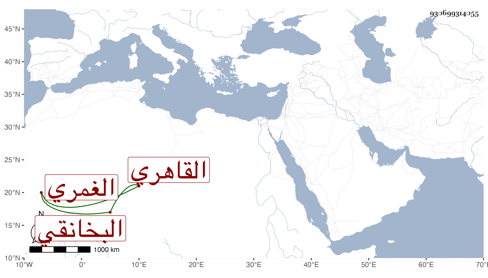

0902Sakhawi.DawLamic.ITO20230111-ara1.EIS1600.930699314055
Biography ID: 930699314055
702
عبد القادر بن حسن بن علي الغمري ثم القاهري البخانقي ويعرف بابن فقوسة . له بنون جلال الدين محمد وزين العابدين محمد وهما من أم وشهاب الدين أحمد وأبو الفتح محمد وأبو الحسن علي والثلاثة من أم الأول شافعي المذهب وكذا الثالث والثاني عزمه يكون حنبليا والرابع حنفي يقرأ في القدوري والآخر عزم على كونه مالكيا .
